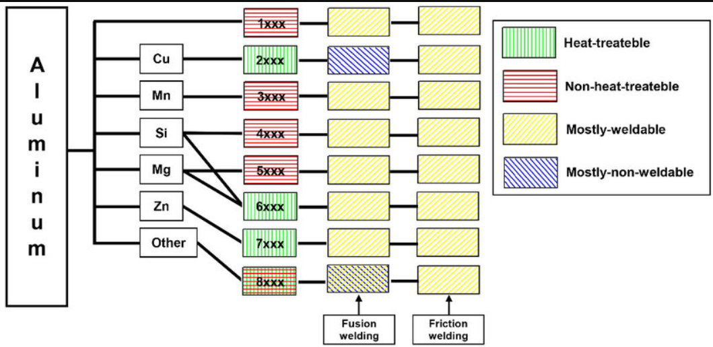

Glossary
| EN | FR | comment |
|---|---|---|
| wrought | corroyé | manufactured by a forging process |
Databases
https://www.matweb.com/
🇫🇷 https://www.euralliage.com/aluminium.htm
Classification
The first digit indicates the alloy group according to the main alloying elements The second digit indicates modification of the alloy or impurity limits. The last two digits identify aluminum alloy or indicate the alloy purity (for the 1xxx series)
1xxx - Aluminum (at least 99.0% pure). - very high corrosion resistance - high electrical and thermal conductivity - good formability - low strength - not heat treatable
2xxx - Aluminum-Copper alloy - high strength-to-weight ratio - low corrosion resistance - heat treatable.
3xxx - Aluminum-Manganese - good formability - moderate strength - not heat treatable
4xxx - Aluminum-Silicon - lower melting point than normal - not heat treatable
5xxx - Aluminum-Magnesium - good corrosion resistance - easy to weld - moderate to high strength - not heat treatable
6xxx - Aluminum-Magnesium-Silicon - medium strength - good formability, machinability and weldability - corrosion resistant - heat treatable
7xxx - Aluminum-Zinc alloy - moderate to very high strength - heat treatable - prone to fatigue
The four digit designation of aluminum alloys is usually accompanied by any of the following four letters: F, O, W, and T. - F stands for as fabricated (forgings and castings prior to heat treatment) - O for annealed - W for solution heat treated - T for heat treated to stable temper conditions other than O or F.
References - https://www.ae.msstate.edu/vlsm/materials/alloys/aluminum.htm
Tensile strength

Fabrication : wrought vs casting
Wrought aluminum alloy is an aluminum alloy material manufactured by a forging process. Forging is a metalworking process in which a metal material is plastically deformed by the application of pressure to obtain a desired shape and size.
Forged aluminum alloy has excellent mechanical properties such as high strength, high toughness, good corrosion resistance and heat resistance, so it has a wide range of applications in the manufacture of high-strength, lightweight, high-reliability parts and structural parts.
Casting aluminum alloy is a type of aluminum alloy that is produced by casting process, which involves pouring molten metal into a mold to achieve a desired shape and size. Cast aluminum alloys have a wide range of mechanical properties and can be produced in different shapes and sizes, making them suitable for a variety of applications.
Weldability

🇫🇷
https://expertisemetallurgique.wordpress.com/2019/11/04/partie-1-les-types-daluminium-et-leurs-caracteristiques/ (2019)
En raison de la couche d’oxyde réfractaire (alumine) qui le recouvre, l’aluminium était jadis considéré non soudable. Peu après, l’utilisation d’un décapant (flux) permettant d’éliminer l’alumine permit le soudage au gaz des alliages d’aluminium. Grâce au décapage électronique, il est maintenant possible de souder l’aluminium au GTAW et même à l’électrode enrobée. De nos jours, l’aluminium se soude facilement et il est facile de faire un dépôt de qualité ayant une belle apparence avec les procédés SMAW, OAW, GTAW et GMAW.
https://expertisemetallurgique.wordpress.com/2019/11/12/partie-2-la-soudabilite-des-alliages-daluminium/ (2019)
Les différentes séries d’alliage sont toutes soudables, mais certaines nuances de la série 7XXX sont plus difficilement soudables de par leur grande sensibilité à la fissuration. Les familles d’alliages qui se soudent le plus facilement sont les séries 1XXX, 3XXX et 5XXX qui n’ont pas été traitées thermiquement. La série 6XXX peut aussi être soudée facilement, mais le soudage provoque une baisse des propriétés mécaniques.
Les alliages à résistance élevée des séries 2XXX et 4XXX sont soudables, mais il faut prendre des précautions particulières. À l’intérieur de la famille 7XXX, seulement les alliages 7039 et 7005 sont soudables
Production